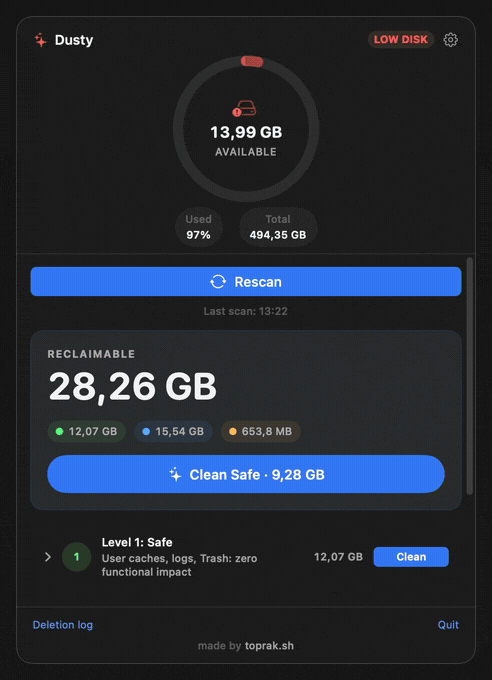

Targets are explicit entries. Dusty does not crawl your home folder looking for things that seem removable.
Free open-source macOS disk cleanup
Dusty vs CleanMyMac: a safer cleanup alternative for Mac users.
Dusty is not trying to be a full system suite. It is a focused CleanMyMac alternative for people who want transparent disk cleanup: no subscription, no account, no telemetry, and no deletion rules hidden behind a closed app.
Free and MIT licensed
No telemetry or account
Preview every path first

Short answer
Choose Dusty if your main goal is reclaiming space safely.
CleanMyMac is a broader commercial suite. Dusty is deliberately narrower: it cleans reviewable, allowlisted disk junk and shows the exact paths before anything is removed. That narrower scope is the safety feature.
$0price
0telemetry or accounts
MITlicense
Comparison
Dusty is smaller on purpose.
The useful question is not whether Dusty has every CleanMyMac feature. It is whether the cleanup part can be safer, more inspectable, and easier to trust.
| Decision point | Dusty | CleanMyMac |
|---|---|---|
| Price | Free. MIT licensed, no subscription, no trial gate. | Commercial license or subscription. |
| Source transparency | Open source. Cleanup targets and safety validator are public. | Closed source. Users cannot audit deletion logic directly. |
| Deletion model | Allowlist-only. If a path is not an explicit cleanup target, Dusty refuses it. | Broader app-managed categories, with implementation details hidden from users. |
| Preview before cleanup | Yes. Dry-run mode shows exact paths and sizes before deletion. | Provides cleanup categories and previews, but not open-source target rules. |
| Personal-folder protection | Rejects protected locations like Documents, Desktop, Photos, Mail, iCloud Drive, and Keychains. | Protection depends on proprietary app behavior. |
| Account and telemetry | None. Cleanup logs stay local on your Mac. | Commercial apps often include licensing/account and analytics systems. |
| CLI and automation | Included. The same engine ships as a dusty CLI and two Shortcuts actions. |
Automation support varies by product and plan. |
| Extra suite features | Not included. No malware scanner, updater, VPN, duplicate finder, or privacy scanner. | Broader suite features beyond disk cleanup. |
Safety model
What makes the cleanup safer?
Dusty takes the boring path: fixed rules, explicit validation, visible paths, and local logs. That makes the product less magical and much easier to audit.
You can inspect exact paths and sizes before deletion, then decide whether the cleanup makes sense.
Dusty does not use sudo and refuses protected personal locations even when a path resembles an allowed target.
validator.canDelete(path) -> must descend from an explicit cleanup target -> must not be inside protected folders -> must pass symlink and prefix checks -> then Dusty can move it to Trash or delete it Result: the cleanup engine is narrow, testable, and reviewable.
FAQ
Honest answers before you replace anything.
Is Dusty a CleanMyMac alternative?
Yes, if the CleanMyMac feature you care about is disk cleanup. Dusty focuses on safe cleanup for app caches, browser caches, logs, Xcode junk, simulators, package-manager caches, stale project artifacts, Trash, local Time Machine snapshots, and selected old installers. It is not an antivirus, app updater, duplicate finder, or privacy scanner.
Is Dusty free?
Yes. Dusty is free, MIT licensed, and open source. It does not require a subscription, account, trial, or email signup.
Can Dusty delete my personal files?
Dusty rejects protected folders such as Documents, Desktop, Photos, Mail, iCloud Drive, and Keychains. It can delete only known cleanup targets from its open-source allowlist, and dry-run mode shows exact paths before removal.
Does Dusty collect telemetry?
No. Dusty has no account system and no telemetry. Cleanup logs are local JSON files on your Mac.
Where can I audit the code?
The app, cleanup engine, and rules live in the public GitHub repository. The deeper safety breakdown is at toprak.sh/dusty/safety/.
Try it
Clean up your Mac without trusting a black box.
Install Dusty, run a dry scan, and inspect every path before you remove anything.